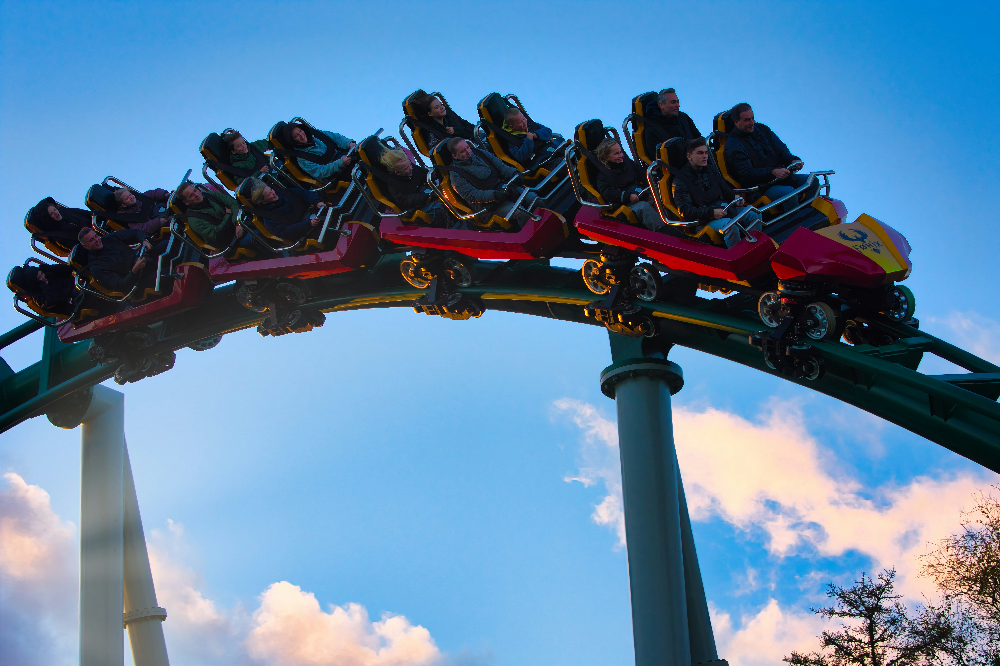
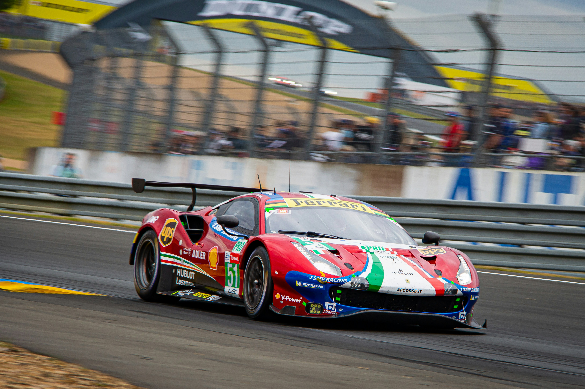
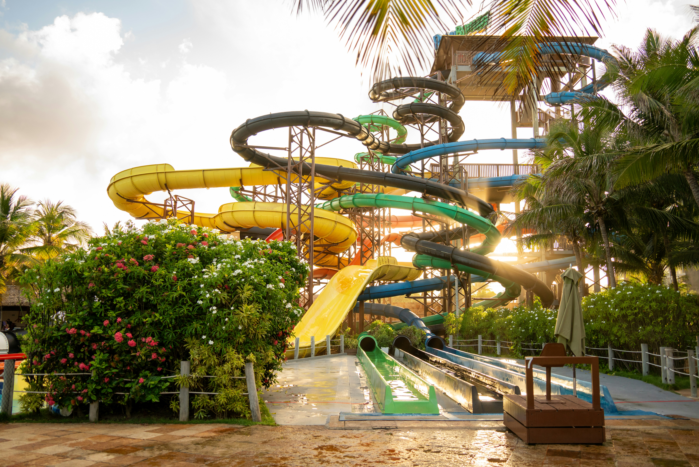

Can you handle the height? Carowinds might be the best spot for you! Ride roller coasters like the Fury 325 and the after burn to really feel the wind! Carowinds is a popular amusement park with a variety of attractions and rides for all ages. The park features thrilling roller coasters, family-friendly attractions, and exciting shows that cater to all visitors big and small. CThis theme parks has numerous places to cool down in and dine in with friends and family and themed dining options.
Come to Charlotte to see the cities most exciting and interactive racing experience. In the NASCAR hall of fame, you'll get to learn all about NASCAR's history, as well as the history of the drivers behind the wheel! Come see a life size version of the main characte Lightining McQueen as well as the replica of the Fabulous Hudson Hornet. Inside this center, you can even see what it's like to be in the pit changing tires. Challenge your friends and famiily and see who can get the quickest time!


Escape to Wet 'n Wild, where you can cool off and have fun in the sun! With a variety of water rides and attractions, there's something for everyone. From lazy rivers to thrilling slides, Wet 'n Wild has it all. The park also features themed dining options and plenty of places to relax and recharge.